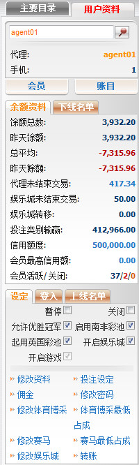
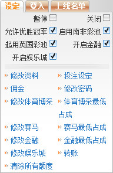

概述
定义:
账号信息的目的是帮助总代理查看及管理所有下线的设定。此功能分为三个主要部分:

账号信息
客户信息
在这个部分, 您可查看关于您自己及所有下线的详细信息, 包括: 名字, 联络方式, 下线名单, 账目及日志。 请查阅客户信息指引以了解详情。

客户信息
余额资料
在这个部分, 您可查看关于您下线的余额信息, 此外这也支持修改信用额度, 会员最高信用额度或您也可根据昨日余额与直属下线进行转账。请查阅余额资料指引以了解详情。

余额资料
账号设定
在这个部分, 您可查看及修改所有下线的设定。请查阅账号设定指引以了解详情。

账号设定